Making simple plots
One can make simple plots with mdadata objects in a similar way as it is done for ordinary matrices and vectors in Matlab. However using the datasets giving you extra possibilities, like having automatic titles for axes, labels for data objects (markers, bars, etc), legends when making group plots, etc. Below we consider simple graphical methods and in the next two sections more advanced methods will be explained.
In most of the methods, it is considered that columns represent variables and rows represent observation. Transpose your data if it is opposite. The list of methods for making simple plots include scatter(), densscatter(), plot(), bar(), levelplot(), matrixplot(), hist(), errorbar(), boxplot() and qqplot().
Scatter plots
Scatter plots can be make with method scatter(), however it utilises the Matlab's built-in function plot(), since it works much faster when number of observations is large. One can use all parameters of the standard plot() to tune the result.
To make the scatter plot user should provide a dataset with at least one column as a first argument. If one column is used, the x values will be generated as a sequence from 1 to N, where N is number of observations.
load people % two selected columns and standard parameters figure('Position', [0 0 400 300]) scatter(people(:, 1:2), 'Marker', 's', 'MarkerFaceColor', 'c');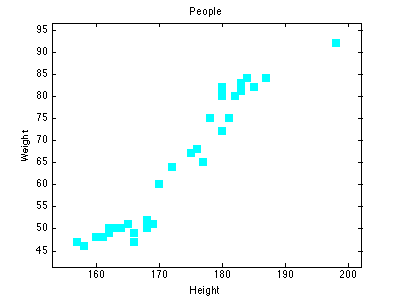
If more than two columns are provided, the method will show the plot for the first two and ignore the other columns.
figure('Position', [0 0 400 300]) scatter(people(:, {'Height', 'Weight', 'Beer', 'Swim'}), 'Color', 'r');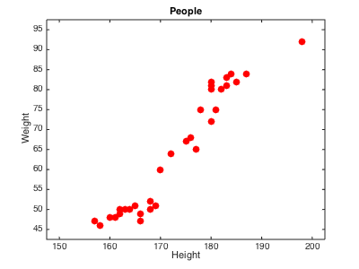
Labels of objects can be shown either as names (if provided) or as numbers:
figure('Position', [0 0 800 300]) subplot(1, 2, 1) scatter(people(:, 1:2), 'Labels', 'names'); subplot(1, 2, 2) scatter(people(:, 1:2), 'Labels', 'numbers');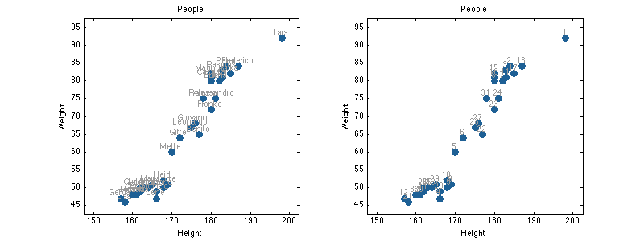
Besides that the scatter() method allows grouping the data points by colors. Parameter 'Colorby' allows to make a color grouping using a vector with numeric values or one of the columns of the dataset. Column name or number should be specified as the parameter value in latter case.
figure('Position', [0 0 800 300]) % group by numeric values v = people(:, 'Beer').values; subplot(1, 3, 1) scatter(people(:, 1:2), 'Colorby', v); % group by logical values subplot(1, 3, 2) scatter(people(:, 1:2), 'Colorby', v > 300); % group by one-column mdadata object subplot(1, 3, 3) scatter(people(:, 1:2), 'Colorby', people(:, 'Beer'));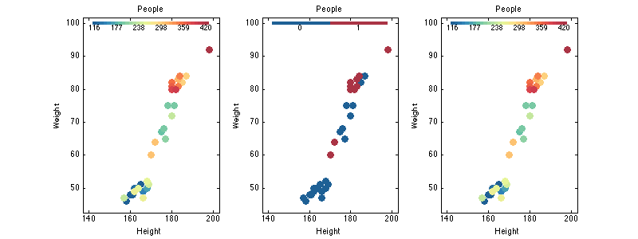
The grouping can be tuned by setting another color map (parameter 'Colormap'), adding a colorbar legend ('Colorbar') and title for the color bar ('ColorbarTitle'):
figure('Position', [0 0 800 300]) subplot(1, 2, 1) scatter(people(:, 1:2), 'Colorby', people(:, 'Beer'), 'Colorbar', 'on'); subplot(1, 2, 2) scatter(people(:, 1:2), 'Colorby', people(:, 'Beer'), 'Colormap', @gray,... 'Colorbar', 'on', 'ColorbarTitle', 'Beer consumption (L/year)');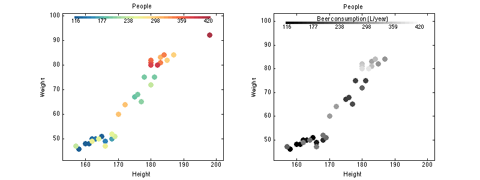
Density scatter plots
The dnesity scatter plot is an extension of scatter plot, where data poits are colored according to density of area around them (how many neighbors they have. The plot is useful when it is needed to dectect patterns in a data with thousands of objects.
data = mdadata(randn(50000, 2));
figure('Position', [0 0 400 300])
densscatter(data);
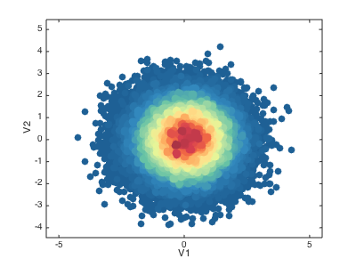 Additional parameters allow to change area of neighborhood the density is calculated for and change color map as it can be done with scatter().
figure('Position', [0 0 800 300]) subplot(1, 3, 1) densscatter(data); subplot(1, 3, 2) densscatter(data, 'NBins', 30); subplot(1, 3, 3) densscatter(data, 'Colormap', @spring);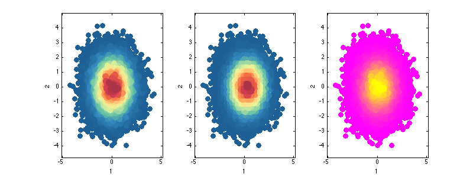
Line plots
Method plot() is used to make line plots, very much similar to how it works with standard Matlab function. By default the values for x axis are generated as a sequence from 1 to N, where N is number of columns (variables) in the dataset. Every observation is shown as a line.
In the example below we will be using another data, 'simdata', which includes UV/Vis spectra and concentration map of mixings of three polyaromatic hydrocarbons. There are two datasets: 'spectra' with spectral values, and 'conc' with concetrations.
load simdata figure('Position', [0 0 800 300]); plot(spectra, 'Color', 'r')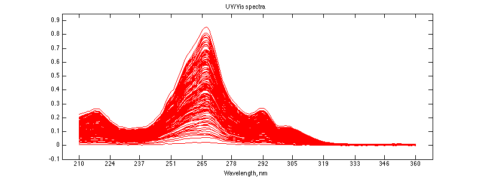
If it is needed to use specific values for the x, they can be provided as a second argument and can be either a numeric vector or mdadata object with one column and the same values as number of columns in original dataset.
figure('Position', [0 0 800 600]); % use channel numbers subplot(2, 1, 1) plot(spectra, 1:151, 'Color', 'b') xlabel('Wavenumbers') % convert nm to cm-1 nm = str2num(cell2mat(spectra.colNames')); invcm = 10^7 ./ nm; subplot(2, 1, 2) plot(spectra, invcm, 'Color', 'r') xlabel('Wavelength, cm-1')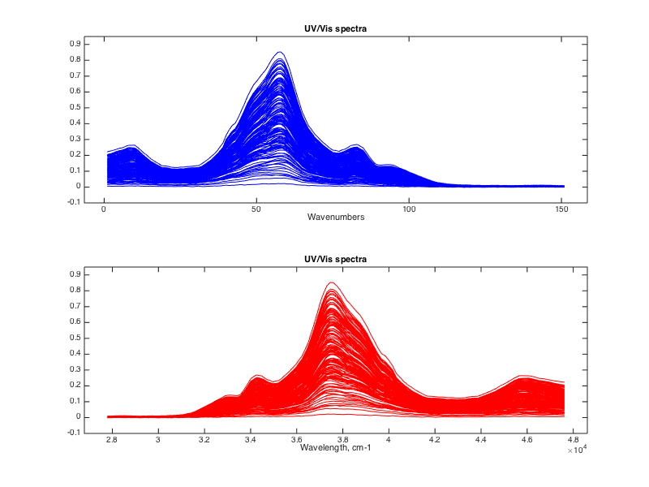
Finally the method allows to make color grouping of the lines, using the same way and parameters as scatter(). Below we will colorise the spectra accoring to the concentration of first component of the mixings.
figure('Position', [0 0 800 600]); subplot(2, 1, 1) plot(spectra, 'Colorby', conc(:, 1)) subplot(2, 1, 2) plot(spectra, 'Colorby', conc(:, 1), 'Colorbar', 'on', ... 'ColorbarTitle', 'Concentration of C1')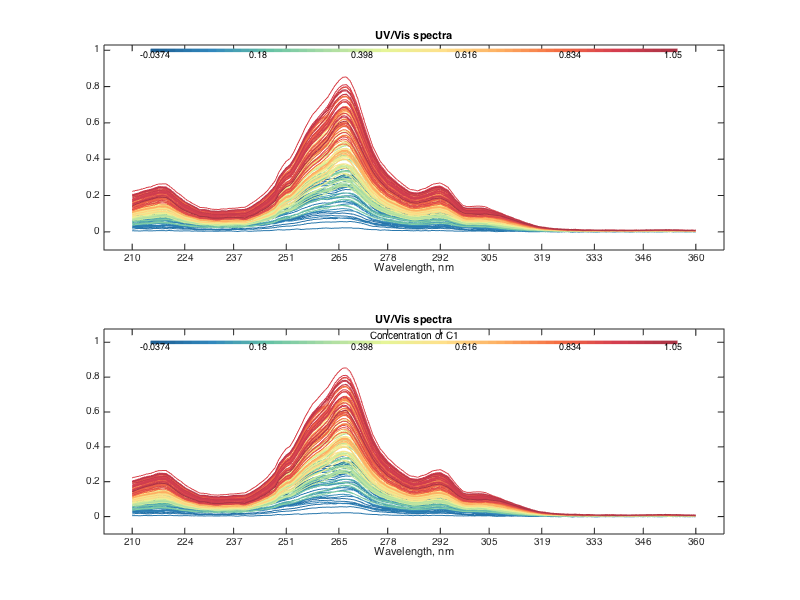
Bar plots
Bar plots are used to show the values for a particular row of a dataset. Let us imagine that we have a explained variance values for PCA decomposition:
expvar = mdadata([45.6 24.1 9.71 5.63 3.1; 43.4 21.1 9.63 4.12 2.2], ... {'Calibration', 'Test'}, 1:5, {'Results', 'Components'}, ... 'Explained variance, %'); show(expvar)
Explained variance, %:
Components
1 2 3 4 5
----- ----- ----- ----- ----
Calibration 45.6 24.1 9.71 5.63 3.1
Test 43.4 21.1 9.63 4.12 2.2
This code will show the bar plot for selected row:
% show plot for one row and change bar color figure('Position', [0 0 400 300]); bar(expvar('Test', :), 'FaceColor', 'r')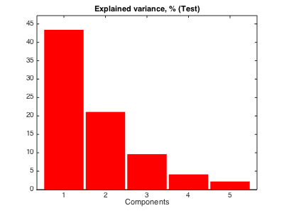
Labels can be show on the top of each bar, the actual y values are used for the labels. You can specify significant figures for the label values using parameter 'LabelsSigfig'.
figure('Position', [0 0 600 300]); subplot(1, 2, 1) bar(expvar('Test', :), 'Labels', 'values') subplot(1, 2, 2) bar(expvar('Test', :), 'Labels', 'values', 'LabelsSigfig', 2)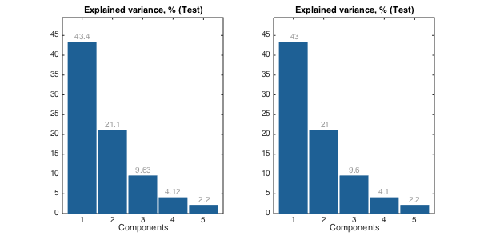
Level and matrix plots
These two simple plots can be used to overview of all values at the same time. The level plot shows values as a set of rectangles, color of each correspond to a value it represents. A color pallette can be changed by the standard colormap() function and colorbar can be added to see the color map to the values. The method can be particularly useful for visualising data of the same origin (unites) or pairwise data, for example correlation matrix.
figure('Position', [0 0 400 300]); levelplot(people(1:5, 1:5)) figure('Position', [0 0 400 300]); levelplot(corr(people(1:5, 1:5)), 'Colormap', @jet) colorbar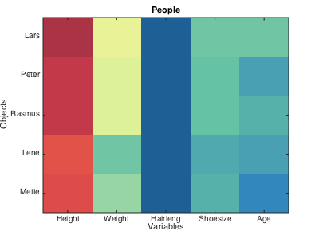 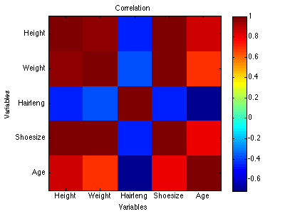
The matrix plot does almost the same, but shows values as a 3D surface instead of flat set of rectangles. The method uses standard function mesh() to make the plot.
figure('Position', [0 0 500 300]); matrixplot(people(1:5, 1:5), 'Colormap', @jet) colorbar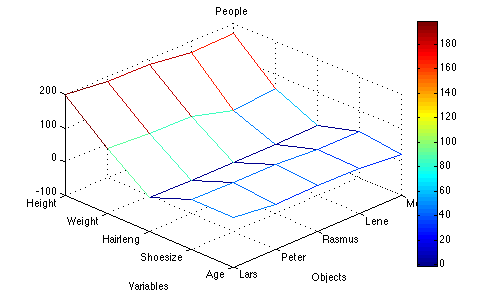
Statistics plots
There is also a family of plots for statistical analysis, including distribution histogram (hist()), error bar plot (errorbar()], box and whiskers plot (boxplot()) and quantile-quantile normal plot (qqplot()).
The histogram plot shows density or frequency distribution for a selected column of a dataset. All parameters from standard bar() function can be used. The histogram bars are made partly transparent to be in contrast with normal distribution curve (if shown), this can be changes using parameter 'FaceAlpha'. The parameters of the curve, such as 'Color', 'LineStyle' and 'LineWidth' can be also changed.
figure('Position', [0 0 800 300]) subplot(1, 2, 1) hist(people(:, 'Height'), 'FaceColor', 'r', 'FaceAlpha', 1) subplot(1, 2, 2) hist(people(:, 'Height'), 5, 'Density', 'on', 'ShowNormal', 'on', 'Color', 'r')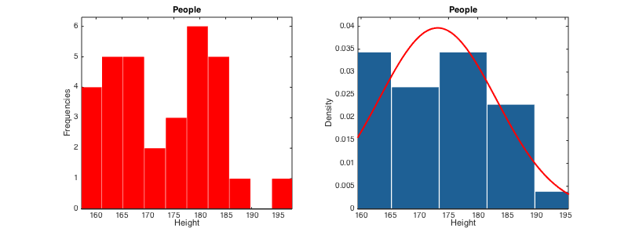
The errobar plot shows average values and error bars for each of the dataset columns. The error bars are calculated by default as 95% confidence intervals for mean values, based on Student's t-distribution, but this can be changed to standard error, standard deviation or one of these with a factor of desired probability. Most of the parameters for standard plot() function can be used.
d = people(:, {'Height', 'Weight', 'Beer', 'Wine'});
figure('Position', [0 0 900 600])
% error bars show 95% confidence interval for mean
subplot(3, 2, 1)
errorbar(d, 'Color', 'r')
% error bars show 90% confidence interval for mean
subplot(3, 2, 2)
errorbar(d, 'Alpha', 0.10)
% error bars show one standard error (+/-)
subplot(3, 2, 3)
errorbar(d, 'Type', 'se')
% error bars show one standard deviation (+/-)
subplot(3, 2, 4)
errorbar(d, 'Type', 'std')
% error bars show interval for 90% of most common values
subplot(3, 2, 5)
errorbar(d, 'Type', 'std', 'Alpha', 0.10)
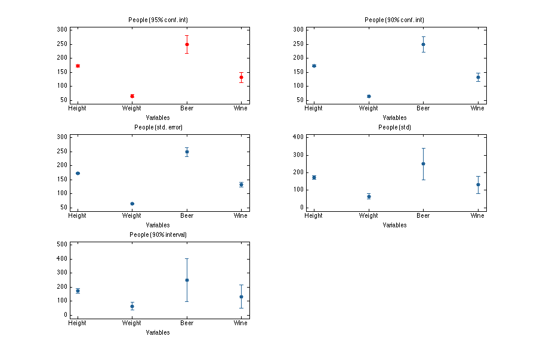 The box and whiskers plot shows quartiles of the dataset columns as well as minimal and maximal values for outliers free data. The outliers are detected as values exceeding q3 + w(q3 - q1) or beneath q1 - w(q3 - q1). Here q1 is first quartile, q3 is the third quartile and w is a parameter, which can be changed using 'Whisker' option. The default value for w is 1.5 which gives interval about +/- 2.7 standard deviations for normally distributed data. The detected outliers are shown as separate points. Option ShowLabels let the method show labels (object names) for the outliers.
d = people(:, {'Height', 'Weight', 'Swim'});
figure('Position', [0 0 900 300])
subplot(1, 3, 1)
boxplot(d)
subplot(1, 3, 2)
boxplot(d, 'Whisker', 1, 'Color', 'r', 'EdgeColor', 'k')
subplot(1, 3, 3)
boxplot(d, 'Whisker', 1, 'Labels', 'names')
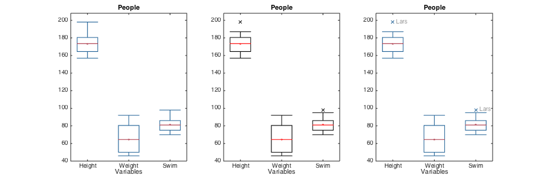 Quantile-quantile plot for normal distribution calculates real and theoretical quantiles of each data point as if the values are distributed normally. The calculated values are shown as a scatter plot and can be used to evaluate if data is distributed normally or deviates from normal distribution.
As e.g. hist() method it shows plots for the first 12 columns in the dataset.
figure('Position', [0 0 900 300]) subplot(1, 2, 1) qqplot(people(:, 'Height')) subplot(1, 2, 2) qqplot(people(:, 'Height'), 'Labels', 'on', 'ShowNormal', 'off')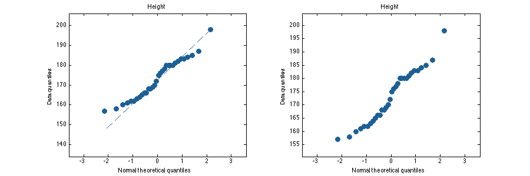